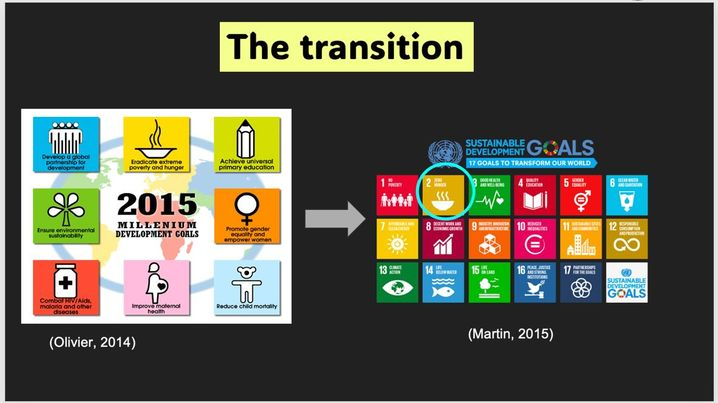

Communication

Effective communication
As a group, we have taken significant steps to ensure our ability to effectively communicate our findings to a first-year undergraduate biology audience. We have strived to use clear and accessible language throughout our communication piece catered to our audience. To ensure a thorough understanding of our informative piece we've focused on explaining complex concepts at a steady pace and in a simpler way. We recognize the importance of visual aids in conveying our message thus we used PowerPoint as our mode of presentation. We included diagrams, charts, and images to help illustrate our points and make the information more engaging and understandable for our audience. I also included animation and transitions for my slides to ensure engagement is maintained.
Logical Structure of the Communication Piece
Our communication piece follows a logical structure, starting with an introduction to the chosen UNSDG. This is followed by an in-depth analysis of the indicators and an explanation of the relevant molecular biology principles related to Goal 2. Our discussion concludes with a vision for the future. This layout allowed us to adeptly present our findings within the given time limit whilst fostering a clear understanding for our audience.
Peer Review and Methodical Approach
In addition, we have actively engaged in peer review within our group to ensure that our communication piece is not just comprehensible but also captivating. This methodical approach has enabled us to effectively communicate our understanding of this course and its subject matter, as evidenced by our final grades.
Where did it all happen
Without the help of WhatsApp, we would have not been able to communicate with each other and be able to create an engaging and informative communication piece. Along with Google Docs where we collaborated and shared our individual findings and PowerPoint where our presentation was brought to life.